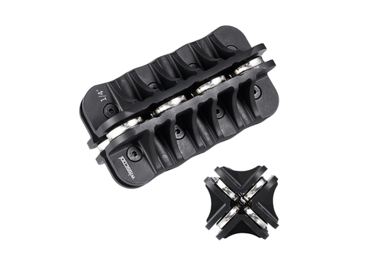
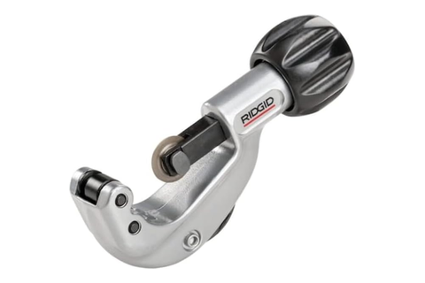
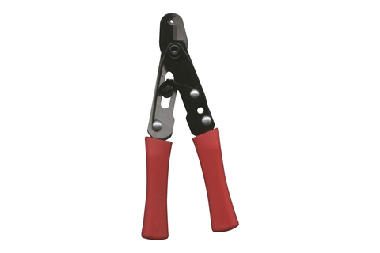
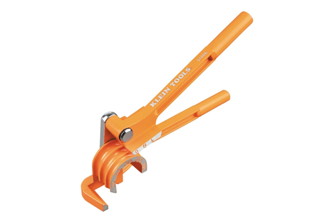
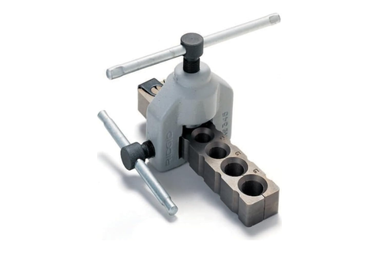
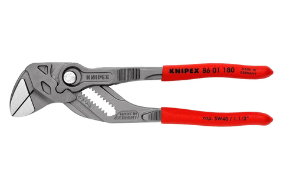

Tube bench
cut, straighten, bend, flare · the copper station, upstream of every braze
Tool station · 05/13Kitchen edition
Every bore here has to survive the operation.
The copper comes off a 50 ft roll, straightens, cuts
square and winds into the mandrel's groove — one
16 ft length per vessel,
12.72 ft of it wrap and a
500 mm tail standing radially out of each end. The
last two jobs are the smallest: a flare that seals the argon rig, and a
1/4″ stub squeezed shut around a capillary.
Stock
1/4″ ACR GOORY · 0.031″ wall
Per vessel
16 ft 12.72 ft wound
Coil
9.687 wraps 12.33 mm pitch
Cap tube
0.031″ Mastercool only
Operation
In hand
On what
What it is really for
StraightenCC-01
Wisscool 1/4″ handheld
de-coils before bending
ACR copper off the 50 ft roll
a third of a roll per build
The roll's curve comes out before the mandrel's goes in.
CutCC-01 · RL-03
RIDGID 150 1/8″–1-1/8″constant-swing · Mastercool 70025 on capillary, nothing else
16 ft per vessel; the cap tube at its evap-inlet end
drier, brazed-on capillary and helix stay one piece
Square ends for the flare and the sweat sockets. The Mastercool
severs 0.042″/0.050″ capillary without
crushing the bore.
BendCC-01
Klein 51006 3-in-1
1/4 / 5/16 / 3/8 OD
The wind, into the mandrel's 1 mm groove
9.687 wraps at 12.33 mm, both tails purely radial
The 0.031″ wall is what resists kink at the
radius a 5″ OD vessel asks for.
FlareRL-03
RIDGID 345 45° SAE
Joywayus 1/4″ SAE brass flare nut over it
A short 1/4″ ACR stub
RHP400 outlet to charging hose to the BPV31 port
The one sealed joint on the argon rig — it carries the purge for
the whole loop-open period.
Pinch-swageRL-05
Knipex 86 01 180 7.25″smooth parallel-jaw
Coil-inlet stub down onto 0.031″ cap tube
progressive 60° rotation collapse
The OD mismatch closes in the copper itself, no reducer fitting. Flats,
not bites — the jaws stay parallel through the squeeze.
⛔
The cap tube is
cut once, at its evap-inlet end, and everything upstream stays one
piece at factory length. Change it substantially and a refrigeration
tech recalculates cap length for the new load.
Both tails leave radially, same side. They meet the
foam shell at its copper-plug exits, inlet low and outlet high, and they
are all the clocking the coil gets — the wraps land where the pitch
puts them.
Have in hand

Wisscool1/4″ straightener

RIDGID 1501/8–1-1/8″ cutter

Mastercool 70025cap-tube cutter

Klein 510063-in-1 bender

RIDGID 34545° SAE flare

Knipex 86 01 180pliers wrench
The groove is the pitch — a
1 mm cradle at 12.33 mm
holds the copper where it lands, and the coil leaves the bench clocked
only by its two tails.